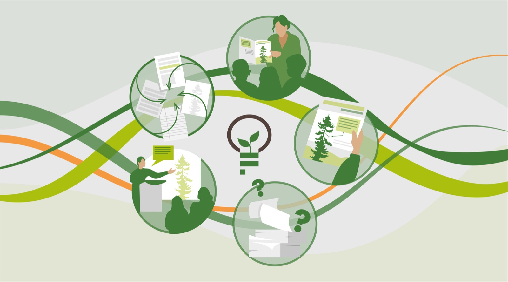

Fuse today
Over time our expertise and offerings have been expanded and refined. We currently offer five main services:
- Infographics & Science Illustration
- Workshops & Facilitation
- Strategic Advising
- Knowledge Synthesis
- Education & Science Outreach